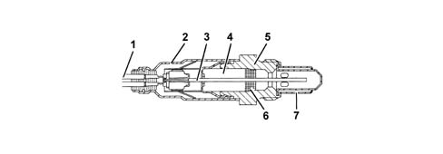
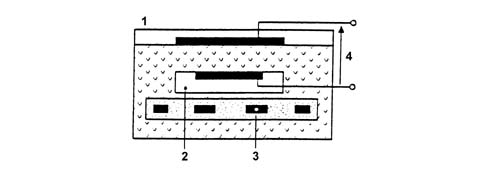
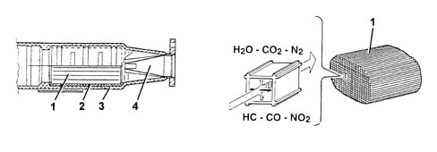

OPERATION.
- Path
- Descriptions > 10 ENGINE > 1080 EMISSION CONTROL SYSTEM > 1080B EXHAUST EMISSION CONTROL SYSTEM > OPERATION.
- Kind
- system description
- Applies to
- engines: 2.4 20V; all production periods
- Interactive page
- https://sloeber94.github.io/elrnDB-lThss/en/#/609855
Applies to: engines: 2.4 20V; all production periods
LAMBDA SENSORS
Planar type, located upstream of the catalytic converter and downstream.
The upstream sensor controls the concentration and is known as the first loop.
The control unit controls and manages injection so that the air/fuel ratio is always sufficiently close to a stoichiometric level to maximise catalytic converter efficiency. The mixture is enriched to ensure maximum performance at full power with high usage.
The downstream sensor diagnoses catalytic converter efficiency.
Thus:
- lambda = 1 ideal mixture.
- lambda > 1 lean mixture.
- lambda < 1 rich mixture
- a - Rich mixture (low air).
- b - Lean mixture (excess air).
The lambda sensor is in contact with the exhaust gas and generates an electrical signal. Signal voltage depends on the level of oxygen in the exhaust gas. This voltage undergoes an abrupt change when mixture composition deviates from lambda = 1.
The injection control unit controls the lambda sensor heating in proportion to exhaust gas temperature.
This prevents thermal shocks to the ceramic case due to contact with condensed water present in the exhaust gas when the engine is cold.
The measurement chamber and heater are built into the planar (laminated) ceramic element. This offers the advantage of fast chamber heating to allow closed loop control (lambda = 1) within 10 seconds of engine start-up.

- 1 - Connection cable.
- 2 - Protective sleeve.
- 3 - Planar sensor element
- 4 - Ceramic mounting pipe.
- 5 - Sensor seat.
- 6 - Ceramic gasket.
- 7 - Protective pipe.
Lambda sensor operation is based on the principle of an oxygen concentration chamber with solid electrolyte.
The measurement chamber surfaces are coated with microporous layers of noble material.

- 1 - Exhaust gas.
- 2 - Reference air passage.
- 3 - Heater
- 4 - Lambda sensor voltage.
Specifications:
- Fuel system: 12V.
- Internal resistance: 0.5 - 1 kOhm.
CATALYTIC CONVERTER.
The three-way catalytic converter makes it possible to keep down the levels of the three pollutant gases in the exhaust gases at the same time:
- unburnt hydrocarbons (HC);
- carbon monoxide (CO);
- nitrogen oxides (NOx).
Two types of chemical reaction take place inside the converter:
- oxidation of CO and HC to carbon dioxide (CO2) and water (H2O).
- reduction of Nox to nitrogen (N2).
The converter consists of a structure, a metal gauze suppoart to dampen impacts and vibrations and a stainless steel outer casing that is resistant to high temperatures and atmospheric agents. The honeycomb structure is made from a ceramic material covered in an extermely thin layer of catalytically active substances, platinum or rhodium, which accelerated the chemical decomposition of the harmful substances contained in the exhaust gases which, when passing through the core cells at temperatures above 300° - 350°C, activate the catalyzers setting off the oxidation/reduction reactions.

- 1 - One-piece ceramic structure
- 2 - Metal mount.
- 3 - Outer casing.
- 4 - Perforated steel cone.